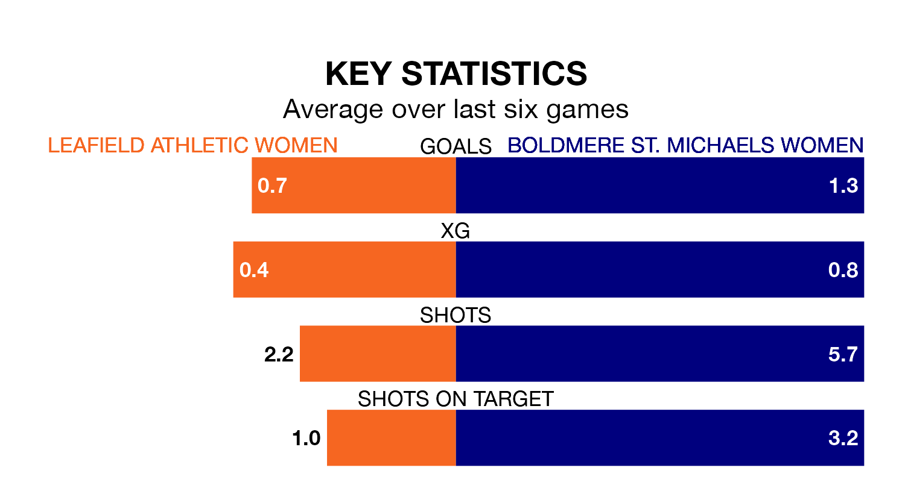

Mid-season relegation candidates Leafield Athletic Women face a challenge against high-flying Boldmere St. Michaels Women on Sunday.
Leafield Athletic Women are 11th in the Womens National League – Division One Midlands table, and have picked up just one win and two draws in their 11 games to date.
Boldmere St. Michaels, meanwhile, are second in the standings with 24 points, having won eight and drawn none, and are four points behind table-toppers Loughborough Lightning W.
Leafield Athletic are in terrible form in Womens National League Division One Midlands, with no wins and two draws from their last six games.
With four wins and two losses over that period, Boldmere St. Michaels's form is much better – they have taken 12 points from 18, compared to the home side's two.
With 10 goals in 11 games so far this season, Leafield Athletic are the league's second-lowest scorers with 0.9 goals per game. And they are conceding more than average, letting in 27 goals at a rate of 2.5 per game.
The visitors, meanwhile, are above average scorers, with 2.0 goals per game, compared to a league average of 1.9. They have conceded 1.3 goals per game.
Leafield Athletic's last match was on Sunday, a 2-1 loss against Lincoln City LFC.
Boldmere St. Michaels beat Peterborough United Women 2-1 last time out, also on January 7.
Updated: 15:34, 08/01/24